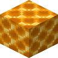

蜜脾块
Honeycomb Block
所属标签
纯原版配方（合成、烧炼等）不在本图鉴收录范围，以下仅列出模组与 CraftTweaker 相关配方。
模组配方 · 用于 (1)
vinery:apple_mashing[Let's Do] Vinery

原始 JSON
{
"type": "vinery:apple_mashing",
"input": {
"item": "minecraft:honeycomb_block"
},
"output": {
"count": 4,
"id": "minecraft:honeycomb"
}
}